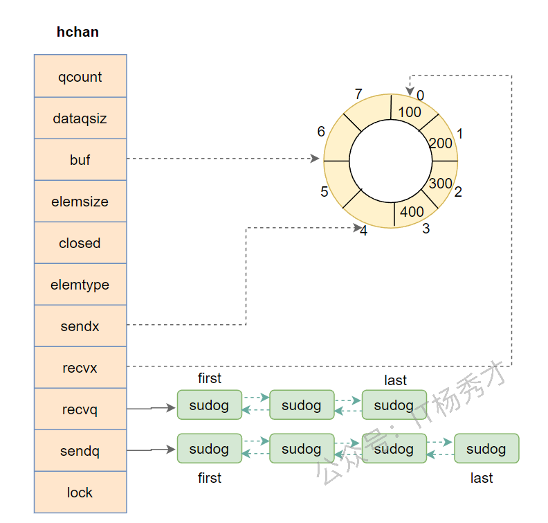
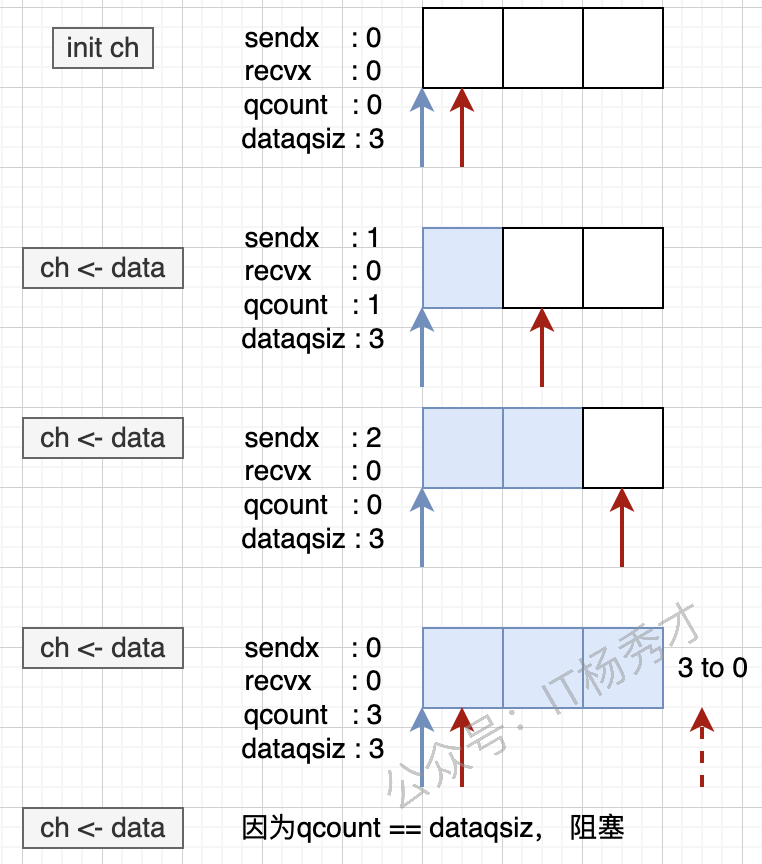
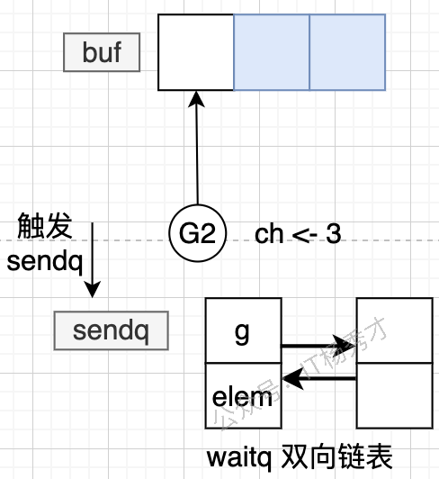
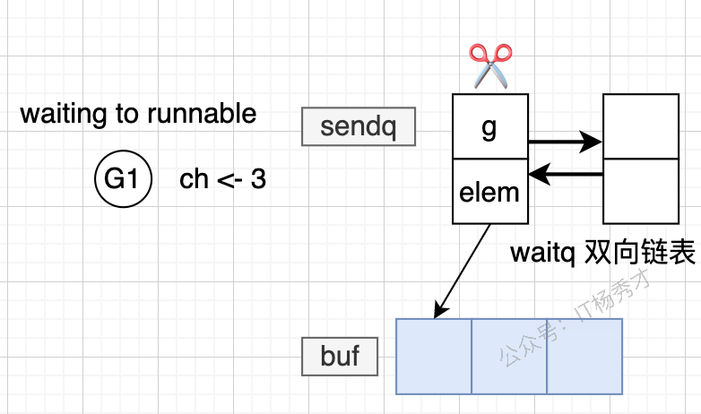
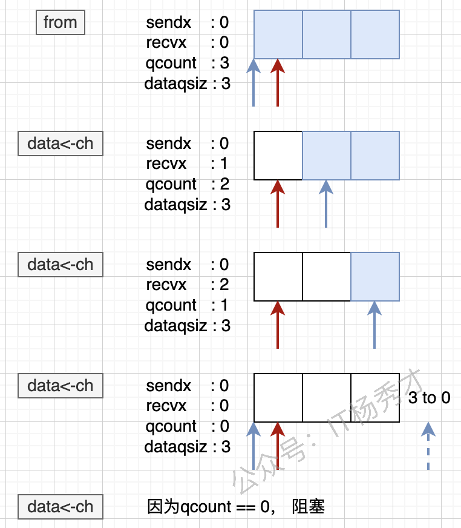

🧠 前言
可以通过 go 关键字开启一个 goroutine，让不同任务并发执行。但仅有并发还不够，真正困难的是让多个 goroutine 之间安全地交换数据、协调执行顺序，而这正是 Channel 的价值所在。
Go 语言强调的核心理念是：不要通过共享内存来通信，而要通过通信来共享内存。Channel 就是这一理念最直接的体现，它让 goroutine 之间的数据传递、同步与协作变得清晰、自然且安全。
📡 Channel 是什么
Go 官方对 Channel 的定义是：
Channels are a typed conduit through which you can send and receive values with the channel operator.
可以把 Channel 理解为一个带类型的通信管道。发送方通过它写入数据，接收方通过它读取数据，goroutine 之间借此完成通信。
Channel 的几个关键特征如下：
- 带类型：
chan int、chan string、chan User都只能传递对应类型的数据。 - 可同步：无缓冲
Channel天生具备同步语义。 - 可缓冲：有缓冲
Channel可以在一定程度上解耦发送方和接收方。 - 并发安全：多个
goroutine可以同时操作同一个Channel。
🧩 Channel 与 CSP
Channel 背后对应的是 Go 一直强调的 CSP（Communicating Sequential Processes） 思想，也就是“通过通信共享内存，而不是通过共享内存来通信”。
从这个角度看，goroutine 更像独立执行的顺序进程，而 Channel 则是它们之间传递消息和同步状态的通信通道。这样设计有几个很直接的好处：
- 避免直接共享内存：不同协程尽量不直接改同一份状态，减少竞态条件。
- 天然带同步语义：发送和接收本身就能形成协作点，很多场景下不必再手动加锁。
- 更容易组合并发模式：像生产者消费者、管道、超时控制、取消传播，都可以围绕
Channel组合出来。
⚙️ Channel 的实现位置
Channel 完全由 Go 运行时在用户态实现，这是 Go 并发模型高效的重要原因之一。
✨ 用户态实现的优势
- 避免内核态切换：
Channel操作本身不依赖系统调用。 - 调度成本更低：阻塞和唤醒由 Go 调度器完成。
- 通信更轻量：相比内核级管道、
socket等机制开销更小。 - 缓冲区在堆上：底层缓冲区由 Go 运行时分配和管理。
🚀 性能意义
由于 Channel 的阻塞、唤醒、排队、数据拷贝等逻辑都在运行时内部完成，所以 Go 能用更低成本支撑大量协程并发执行。
⚖️ 有缓冲 Channel 与无缓冲 Channel
Channel 主要分为两类：无缓冲 Channel 和 有缓冲 Channel。
🔒 无缓冲 Channel
无缓冲 Channel 可以理解为同步通信。发送方写入数据时，如果没有接收方准备好，就会立刻阻塞；接收方读取数据时，如果没有发送方，也会阻塞。
📦 有缓冲 Channel
有缓冲 Channel 可以理解为异步通信。只要缓冲区未满，发送方就可以继续写入，而不必马上等待接收方读取。
先看正常写入时的状态：

当缓冲区被写满之后，发送方同样会阻塞：

因此，有缓冲 Channel 只是把阻塞点后移，而不是完全消除阻塞。
🔍 Channel 底层原理
🧱 底层数据结构
Channel 在 Go 运行时中由 runtime.hchan 表示。调用 make(chan T, size) 时，运行时会在堆上分配一个 hchan 结构，并返回对它的引用，因此 Channel 本质上是引用类型。
之所以分配在堆上，而不是栈上，是因为 Channel 通常需要在多个 goroutine 之间共享，其生命周期往往超过某一个函数调用栈的范围。
先看整体结构示意图：

hchan 的定义如下：
|
|
📋 关键字段说明
qcount：当前缓冲区中已有的元素数量。dataqsiz：缓冲区容量，无缓冲Channel该值为0。buf：指向底层环形缓冲区。elemsize：单个元素的大小。closed：标识Channel是否已关闭。elemtype：元素类型信息，供运行时和 GC 使用。sendx/recvx：环形队列中的写入索引和读取索引。sendq/recvq：保存阻塞发送者和阻塞接收者。lock：保证并发操作安全。
🧩 等待队列与 sudog
阻塞中的 goroutine 不会直接挂在 Channel 上，而是会被封装成 sudog 节点，再进入 sendq 或 recvq 等待队列。
waitq 的结构如下：
|
|
sudog 的核心结构如下：
|
|
这里最关键的字段是 elem：
- 发送时：
elem指向待发送的数据。 - 接收时：
elem指向接收结果写入的位置。
再看一张更直观的结构示意图：

在这张图里，缓冲区容量是 8，当前已有 4 个元素，因此 sendx 指向下一个写入位置，recvx 指向下一个读取位置。
🔐 线程安全性
Channel 是多 goroutine 并发安全的，核心依赖于 hchan 中的 lock。
🔒 锁保护机制
- 发送操作：进入发送逻辑前先加锁，完成后解锁。
- 接收操作：进入接收逻辑前先加锁，完成后解锁。
- 关闭操作：修改
closed状态前先加锁，处理完成后解锁。
📌 等待队列保护
sendq：保证发送者阻塞与唤醒顺序安全。recvq：保证接收者阻塞与唤醒顺序安全。- 缓冲区：通过锁保护
buf、sendx、recvx和qcount，避免并发写乱序。
🔧 Channel 基础操作
📝 声明与初始化
先声明，再通过 make 初始化：
|
|
此时 channelName 的值是 nil，还不能直接使用，需要进一步初始化：
|
|
make(chan int)：创建无缓冲Channel。make(chan int, 3)：创建容量为3的有缓冲Channel。
📤 发送数据
|
|
📥 读取数据
最常见的读取方式如下：
|
|
🔍 判定读取
当我们需要区分“读到的是零值”还是“Channel 已关闭”时，可以使用 ok 判断：
|
|
运行结果：
|
|
当 ok 为 true 时，表示本次确实读到了有效数据；当 ok 为 false 时，表示 Channel 已关闭且数据已经读空。
🔁 for range 读取
如果我们不确定要读取多少次，而是希望“只要有数据就继续读，直到发送方关闭 Channel”，那么 for range 是最自然的写法：
|
|
运行结果：
|
|
🔒 关闭管道
|
|
关闭 Channel 后，接收方仍然可以继续读取已经存在于缓冲区中的数据；只有在数据全部读空之后，后续读取才会得到零值。
|
|
运行结果：
|
|
🏗️ Channel 操作的底层原理
🧱 运行时初始化
业务代码调用的是 make(chan T, size)，真正完成初始化的是 runtime.makechan。
|
|
这里最值得关注的是三种分配策略：
- 无缓冲
Channel：只分配hchan本身。 - 有缓冲且元素不含指针：
hchan与缓冲区连续分配。 - 有缓冲且元素含指针：
hchan与缓冲区分开分配，便于 GC 处理。
📤 Channel 发送流程
发送操作最终会进入 runtime.chansend：
|
|
发送流程可以概括为三条路径：
- 直接发送：如果已有接收者在
recvq等待，数据直接交给接收方。 - 缓冲发送：如果缓冲区未满，数据写入
buf。 - 阻塞发送：如果没有接收者且缓冲区已满，发送方进入
sendq等待。
先看整体发送路径：

当发送方因为缓冲区满而阻塞时，运行时会创建一个 sudog 节点，把当前 goroutine 挂到 sendq 上：

等到其他 goroutine 消费数据后，运行时会把等待中的发送者重新唤醒：

完成数据回填与调度恢复之后，发送方会从等待队列中移除：

如果是无缓冲 Channel，数据不会进入 buf，而是直接从发送方拷贝到接收方内存区域，只是调度流程仍然类似。
如果这时 recvq 中已经挂着等待接收的 goroutine，发送方会先取出对应的 sudog，然后把待发送的数据直接拷贝到对方 elem 指向的地址上。这个地址通常就是接收方栈上的目标变量，因此很多面试题里会强调一句话：无缓冲 Channel 的一次发送，本质上可能是“一个协程把数据直接写进另一个协程的接收位置”，随后再通过 goready 把对方唤醒。
针对不同状态，发送结果如下：
| 操作 | Channel 状态 | 结果 |
|---|---|---|
| 发送 | nil |
阻塞 |
| 发送 | 有缓冲且未满 | 成功写入缓冲区 |
| 发送 | 无缓冲且无接收者 | 阻塞 |
| 发送 | 有缓冲但已满 | 阻塞 |
| 发送 | 已关闭 | panic |
📥 Channel 接收流程
接收操作最终会进入 runtime.chanrecv：
|
|
接收流程的判断顺序如下：
- 已关闭且缓冲区为空：直接返回零值。
- 有等待中的发送者：优先和发送者直接配对。
- 缓冲区中有数据：从
buf拷贝数据到接收变量。 - 无数据可读：如果是阻塞模式，当前接收方进入
recvq等待。
下面这张图更直观地展示了消费过程：

从行为层面看，可以总结为：
- 从空
Channel接收数据：当前goroutine会阻塞。 - 发送队列中已有发送者：接收方会优先直接取走对应数据。
- 缓冲区有数据：接收方直接从缓冲区读取。
- 缓冲区为空且无发送者：接收方进入等待队列。
针对不同状态，接收结果如下：
| 操作 | Channel 状态 | 结果 |
|---|---|---|
| 接收 | nil |
阻塞 |
| 接收 | 打开且缓冲区有数据 | 读取到正常值 |
| 接收 | 打开但没有数据 | 阻塞 |
| 接收 | 已关闭且数据已读空 | 读取到零值 |
🔒 Channel 关闭流程
关闭 Channel 的语法很简单：
|
|
运行时实际调用的是 runtime.closechan：
|
|
关闭时要特别注意以下规则：
- 关闭
nil Channel会panic。 - 重复关闭同一个
Channel会panic。 - 向已关闭
Channel发送数据会panic。 - 从已关闭
Channel接收数据不会panic，但读空后只会得到零值。 - 只能关闭发送方持有的通道：如果变量类型是
<-chan T，连close都无法调用，会在编译期直接报错。
提示
🧩 为什么关闭会唤醒等待中的协程
因为等待中的接收者和发送者分别挂在 recvq 与 sendq 上。closechan 会把这些等待节点全部摘下，再重新放入调度队列：
- 等待接收的
goroutine会被唤醒，并感知到Channel已关闭。 - 等待发送的
goroutine会被唤醒，但恢复执行后会因为“向已关闭Channel发送数据”而触发异常。
🔀 双向 Channel 和单向 Channel
从类型角度看，Channel 又可以分成双向 Channel 与单向 Channel。
- 双向
Channel：既能发送，也能接收。 - 单向
Channel：只能发送，或者只能接收。
📥 定义单向读 Channel
|
|
📤 定义单向写 Channel
|
|
💡 使用说明
读 Channel 和写 Channel 的区别只在 <- 的位置：
<-chan T：只读。chan<- T：只写。
💻 代码示例
|
|
运行结果：
|
|
🔄 无缓冲 Channel 的状态转换
无缓冲 Channel 的核心特点是：发送与接收必须配对发生。没有匹配对象时，双方都会阻塞。
🚦 读写阻塞机制
- 写阻塞：发送时没有接收者，发送方进入
sendq。 - 读阻塞：接收时没有发送者，接收方进入
recvq。
🔁 状态转换过程
-
发送操作：
- 检查
recvq是否存在等待接收者。 - 如果有，直接把数据交给接收方，双方恢复可运行状态。
- 如果没有，发送方进入
waiting状态。
- 检查
-
接收操作：
- 检查
sendq是否存在等待发送者。 - 如果有，直接从发送方读取数据，双方恢复可运行状态。
- 如果没有，接收方进入
waiting状态。
- 检查
🎯 关键特点
- 直接传递：数据直接从发送方交给接收方，不经过缓冲区。
- 同步语义：双方必须同时就绪。
- 状态切换清晰：
running->waiting->runnable。
🔐 Channel 与锁
🧱 用 Channel 实现锁操作
当缓冲区容量为 1 时，Channel 可以近似实现一个简化版互斥锁：
|
|
运行结果：
|
|
这里的 ch <- true 相当于加锁，<-ch 相当于解锁。因为缓冲区容量只有 1，所以同一时刻只有一个 goroutine 能顺利进入临界区。
⚠️ Channel 的死锁场景
Channel 产生死锁的典型原因是：所有 goroutine 都在等待 Channel 操作完成，但没有任何一个 goroutine 能继续推进流程。
💀 典型死锁示例
|
|
运行结果：
|
|
📋 常见死锁场景
-
无缓冲
Channel单向阻塞：- 主
goroutine发送数据，但没有接收者。 - 主
goroutine接收数据，但没有发送者。
- 主
-
循环等待：
|
|
goroutine泄漏引发阻塞：- 某个本应发送或接收的协程提前退出，导致另一端永久等待。
🛡️ 如何避免死锁
- 确保配对：每个发送都应有对应接收。
- 适当加缓冲：减轻发送与接收的强耦合。
- 使用超时控制：通过
select和time.After兜底。 - 正确关闭
Channel：让接收方有机会退出等待。
🧠 Channel 为什么会引出内存泄漏
Channel 本身通常不是“泄漏对象”，更常见的问题是它把某个 goroutine 永久卡住，进而导致 goroutine 泄漏，最后表现成内存迟迟不释放。
典型场景有这些：
- 接收方一直等数据，但发送方已经提前退出。
- 发送方一直等接收者，但接收端已经没人再读。
select没有default，也没有超时或取消分支，所有case又都长期不可执行。
一旦协程一直挂在 sendq、recvq 或相关等待路径上，它引用的变量、闭包环境和调用栈就都没法及时被回收，所以线上排查时经常会把这类问题描述成“Channel 导致的内存泄漏”。
📊 Channel 与协程通信示例
Channel 最常见的用途就是让多个 goroutine 交换结果：
|
|
运行结果：
|
|
这个例子展示了主协程如何通过 Channel 汇总两个子协程的计算结果。
🔀 select 语句
select 是 Go 层面提供的多路复用机制，用于同时监听多个 Channel 的读写事件。
📖 select 是什么
select 可以同时等待多个 Channel 操作，只要其中某个 case 就绪，就执行对应分支。如果没有任何分支可执行：
- 存在
default：执行default。 - 不存在
default：当前goroutine阻塞。
🔁 select 与 I/O 多路复用
select 的思想与 Linux 中的 select、poll、epoll 类似，都是“一个执行流同时等待多个事件”。
🔄 传统阻塞 I/O
- 优点：逻辑直观。
- 缺点：每个连接都需要独立线程，开销较大。
⚡ I/O 多路复用
- 优点：可以复用一个线程处理多个事件，资源利用率更高。
- 缺点：连接数少时，收益未必明显。
Go 的 select 并不直接等同于内核 I/O 多路复用，但在思维模型上非常相似。
📝 基本语法
|
|
⭐ 核心特性
- 随机选择：多个
case同时就绪时，会随机选一个执行。 - 非阻塞控制：配合
default可实现非阻塞读写。 - 超时控制：配合
time.After可实现超时退出。 - 取消传播：配合
context.Done()可实现协程停止控制。
🎯 使用场景详解
🚫 空 select 永久阻塞
|
|
运行结果：
|
|
⚠️ 没有 default 且所有 case 都不可执行
|
|
运行结果：
|
|
✅ 单一 case 加 default
|
|
运行结果：
|
|
🎯 多个 case 加 default
|
|
运行结果：
|
|
🎲 select 的随机性
如果多个 case 同时就绪，select 会随机选择一个执行，因此不能依赖分支执行顺序：
|
|
⏱️ 超时控制示例
|
|
🚀 非阻塞操作
|
|
📊 性能特点
- 随机重排：运行时会对多个
case做随机化处理，降低饥饿风险。 - 只执行一个分支：一次
select最多执行一个就绪case。 - 天然适合并发控制：特别适合超时、取消、优先级选择等场景。
⚙️ select 的运行时实现
在 runtime 层面，select 最终会落到 selectgo。编译器会先把每个 case 转成内部结构，再把这些结构交给运行时统一处理。
运行时里每个分支可以抽象成一个 scase，它会记录当前分支关联的 Channel、操作类型，以及发送或接收所需的数据地址。可以把它理解成“供调度器消费的 case 描述对象”。
|
|
selectgo 的核心执行思路可以概括为三步：
- 先把多个
case随机打散，尽量避免总是优先命中同一个分支。 - 第一轮扫描所有
case，只要发现某个分支已经就绪，就直接执行。 - 如果第一轮一个都没命中，并且也没有
default，就把当前goroutine挂到相关Channel的等待队列里，进入阻塞；后续一旦有某个分支被唤醒，再把它从其他等待队列中摘掉，只执行最终命中的那个分支。
所以从运行时视角看，select 的关键不是“语法糖”，而是“随机化 + 两轮扫描 + 挂队列等待”的组合策略。
🔗 Channel 与 Context
Context 常被用来传递取消信号、超时信息和请求范围数据，而它的取消机制底层就离不开 Channel。
📋 Done 方法
|
|
Done() 返回的是一个只读 Channel。当 Context 被取消或超时时，这个 Channel 会被关闭，所有监听 <-ctx.Done() 的 goroutine 都能立刻感知到。
🛠️ 取消机制实现
|
|
🔄 取消流程
- 关闭
doneChannel。 - 唤醒所有监听该
Channel的协程。 - 递归取消子
Context。 - 解除与父
Context的关联，避免内存泄漏。
⏰ 超时控制
|
|
⚠️ 基本注意事项
- 关闭未初始化的
Channel会panic。 - 同一个
Channel只能关闭一次。 - 向已关闭的
Channel发送数据会panic。 - 从已关闭的
Channel继续读取不会panic，但数据读空后只能得到零值。 - 一个
Channel可以同时被多个goroutine读写，但关闭时机必须明确。 Channel是并发安全的，但业务逻辑上的协作顺序仍然需要开发者自己设计清楚。
📝 小结
Channel 不只是一个“管道”，它其实是 Go 并发模型中最核心的抽象之一。理解 Channel，需要同时掌握三层内容：
- 语法层：如何声明、发送、接收、关闭。
- 语义层：无缓冲与有缓冲分别意味着什么。
- 运行时层：底层的
hchan、等待队列、调度与唤醒到底如何工作。
当你能把这三层联系起来时，很多并发代码中的阻塞、死锁、性能差异和设计取舍都会变得更容易理解。